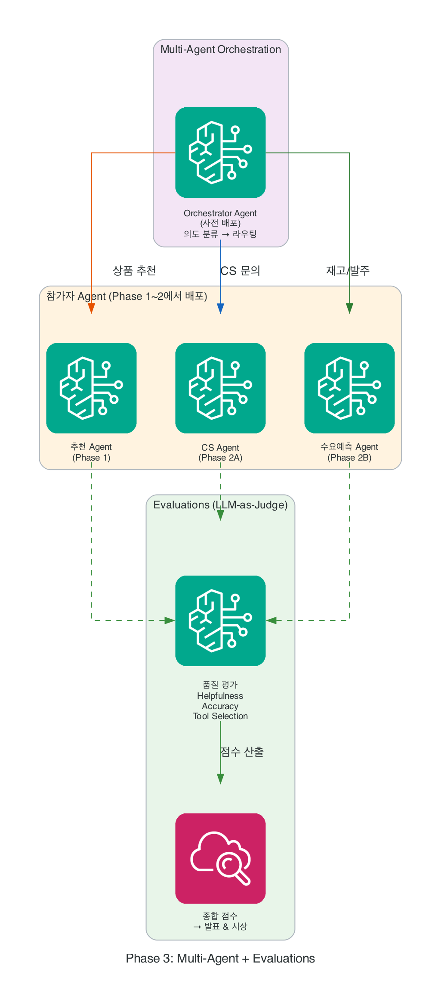

Phase 3: Multi-Agent + Evaluations¶
여러분이 만든 Agent가 혼자 일하던 시대는 끝났습니다. 이제 Orchestrator가 고객 요청을 분석하고, 가장 적합한 Agent에게 라우팅합니다. 그리고 Evaluations로 Agent의 품질을 측정하여 점수를 받습니다. 발표에서 이 점수를 공개합니다.
이 Phase에서 하는 것
- Multi-Agent (A2A) — 사전 배포된 Orchestrator에 내 Agent를 연결
- Evaluations — Agent 품질 점수 자동 측정 (정확도, 응답 품질, 도구 활용)
- 연결 → 평가 → 확인 → 발표 (품질 점수 공개)
Orchestrator는 운영진이 사전 배포했습니다
참가자는 Orchestrator를 직접 만들지 않습니다. 여러분의 Agent를 Orchestrator에 등록하면, Orchestrator가 고객 요청을 분석하여 적절한 Agent로 라우팅합니다. 여러분은 연결과 평가에 집중하세요.
타임라인¶
| 시간 | 활동 | 산출물 |
|---|---|---|
| 15분 | Orchestrator에 Agent 연결 | 라우팅 동작 확인 |
| 20분 | Evaluations 실행 | 품질 점수 리포트 |
| 10분 | 배포 상태 최종 확인 | 엔드포인트 동작 검증 |
| 15분 | 발표 (2분 시연 + 점수 공개) | 라이브 데모 |
아키텍처¶
graph TB
U["👤 사용자 요청"]
subgraph ORCH["🎯 Multi-Agent Orchestrator (사전 배포)"]
CL["의도 분류<br/>recommend / cs / demand"]
end
subgraph AGENTS["🤖 참가자 Agent (Phase 1~2에서 배포)"]
A1["추천 Agent<br/>(Phase 1)"]
A2["CS Agent<br/>(Phase 2A)"]
A3["수요예측 Agent<br/>(Phase 2B)"]
end
subgraph EVAL["📊 Evaluations (LLM-as-Judge)"]
E1["Helpfulness (유용성)"]
E2["Accuracy (정확도)"]
E3["Tool Selection (도구 활용)"]
SC["종합 점수 → 발표 & 시상"]
end
U --> ORCH
CL -->|"상품 추천"| A1
CL -->|"CS 문의"| A2
CL -->|"재고/발주"| A3
A1 & A2 & A3 --> EVAL
E1 & E2 & E3 --> SC
style ORCH fill:#f3e5f5,stroke:#6a1b9a
style AGENTS fill:#fff3e0,stroke:#e65100
style EVAL fill:#e8f5e9,stroke:#2e7d32
Steps¶
- Orchestrator에 Agent 연결하기 (Multi-Agent) — A2A 프로토콜로 내 Agent를 등록
- Agent 품질 측정하기 (Evaluations) — 테스트 시나리오 실행 & 점수 확인
- 배포 상태 확인하기 — 엔드포인트 동작 최종 검증
- 발표하기 (품질 점수 공개) — 2분 라이브 데모 + Evaluations 점수
시상 기준¶
| 평가 항목 | 비중 | 설명 |
|---|---|---|
| Evaluations 점수 | 40% | 자동 측정된 품질 점수 |
| 시나리오 완성도 | 30% | 리테일 시나리오의 현실성과 깊이 |
| 라이브 데모 | 20% | 발표에서의 설득력 |
| 기술 활용도 | 10% | AgentCore 서비스를 얼마나 잘 활용했는가 |
핵심 메시지
Phase 1~2에서 만든 Agent가 이제 팀의 일원이 됩니다.
- Orchestrator가 고객 의도를 분석하여 최적의 Agent로 라우팅
- Evaluations가 Agent의 품질을 객관적 점수로 측정
- 단독 Agent에서 → 협업하는 Agent 생태계로 진화합니다